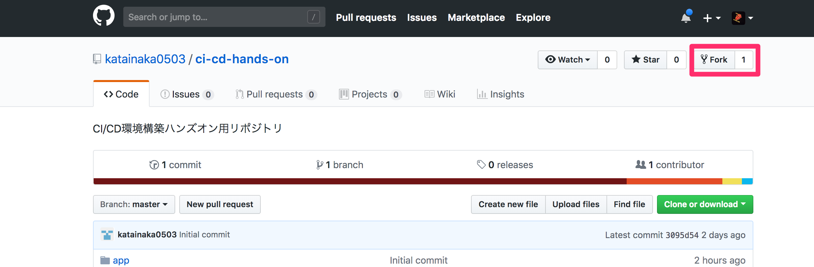

準備
サンプルアプリケーションのフォークおよびクローン
まずは、このリポジトリをフォークし、自分のアカウントにリポジトリを作成します。
サンプルアプリケーションは、指定された数まで FizzBuzz を表示する Node.js による簡単なアプリケーションです

上のリンクから GitHub の当該リポジトリのページに移動し、右上の Fork というボタンからフォークを実行します。

自分の GitHub アカウント上に作成されたフォークしたリポジトリから、ローカルの PC にクローンします。作業用のディレクトリで以下のコマンドを実行します。
$ git clone git@github.com:<ご自分のgithubのアカウント名>/ci-cd-hands-on-ecs.git
クローンされたリポジトリのディレクトリに移動して中身を確認し、クローンが正しく行われたことを確認します。
$ cd ci-cd-handson-ecs
$ ls
Dockerfile cloudformation package.json
README.md docs src
buildspec.pr.yml mkdocs template
buildspec.yml package-lock.json test
ECSのServiceLinkedRole作成
今回 ECS でアプリケーションを動作させるにあたってサービスにリンクしたロールが作成されている必要があります。そのため、IAM のコンソールを開き、AWSServiceRoleForECSというロールがあるかを確認してください。ない場合はサービスにリンクしたロールがない状態ですので、ECSのタスクの実行が失敗してしまいます。
その場合は、以下のコマンドを実行するか
aws iam create-service-linked-role --aws-service-name ecs.amazonaws.com
空の ECS のクラスタを作成し、すぐに削除するなどして ECS のサービスにリンクしたロールが作成された状態にします。
ハンズオン用環境構築用の CloudFormation の実行

上のリンクより、ハンズオン用の環境を構築するための CloudFormation を実行します。
この、CloudFormation によって、以下の図のような構成の環境が作成されます。

アプリケーションの動作環境以外に後で CodeBuildとCodePipeline で使用するための IAM Role を作成しています。
作成したスタックが CREATE_COMPLETE の状態になるまで待ちます。
動作確認
作成したスタックの出力にALBDNSNameというキーで出力された値が、今回のサンプルアプリケーションのアクセス先の URL です。アドレスバーにコピペして、サンプルアプリケーションの動作を確認します。